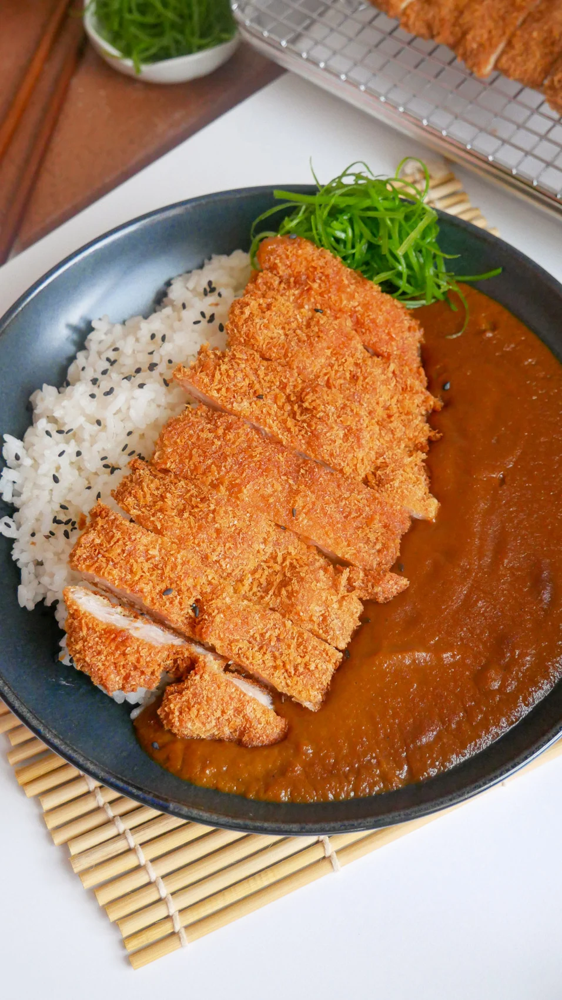

Japanese Curry
Home
Japchae
Tteokbokki

This Coco Ichibanya Curry dupe is surprisingly simple to make and a flavorful journey that brings a taste of
Japan to your home. The flavors are rich yet comforting, making this an experience that feels and tastes like a
warm hug.
Like all top-tier curries, this one tastes even better the next day, which means a big batch can be made in
advance and enjoyed throughout the week. To make it even better, this curry can be stored in the freezer for up
to 3 months!
Lastly, aside from its delicious and soul-soothing appeal, this curry is extremely versatile. It can be served
with various carb groups including rice, noodles, and even bread. And of course, you can throw in your choice of
protein or vegetables into the curry or as a katsu on top!
Curry Ingredients
- Large onions
- Neutral oil
- Unsalted butter
- Carrot
- Apple
- Low-sodium chicken stock
- Water
- Japanese instant curry block
- Curry powder
- Mango chutney
- Bulldog fruit & vegetable sauce
- Dark soy sauce
- White pepper
How do I prepare this Coco Ichibanya Curry Recipe?
-
Caramelize the onions
-
In a medium-sized pot, heat neutral oil and 2 tablespoons of butter over low heat.
When the butter has fully melted, toss in the julienned onions.
-
Cook on low for 40 to 45 minutes until dark brown and caramelized,
making sure to stir occasionally to prevent burning.
-
Add grated carrot and apple
-
Once the onions have caramelized, add the grated carrot and apple.
-
Cook on medium-low for 2 to 3 minutes, until the liquid from the grated apple has evaporated.
-
Pour in low-sodium chicken stock and water
-
Pour in the low-sodium chicken stock and water.
-
Bring to a boil, then reduce to a simmer.
-
Add curry cubes and curry powder
-
Dissolve the curry roux cubes into the pot.
-
Add the curry powder, then simmer for 5 to 10 minutes until slightly thickened.
-
Add condiments and spices
-
Add the mango chutney, Bulldog fruit & vegetable sauce or ketchup,
Worcestershire sauce, dark soy sauce, and white pepper.
-
Stir and mix well.
-
Blend curry and add butter
-
Using an immersion blender, blend the curry until smooth.
-
Add the remaining 2 tablespoons of butter to the curry and mix well.
-
Serve!
- Serve with rice and your choice of katsu! Do note that the flavors of the curry will enhance as it
sits so I recommend storing it in the fridge overnight and reheating it the next day 🙂